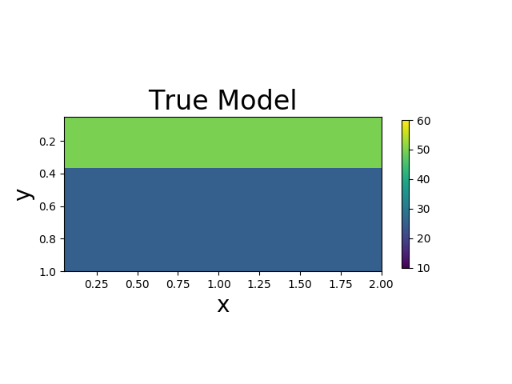
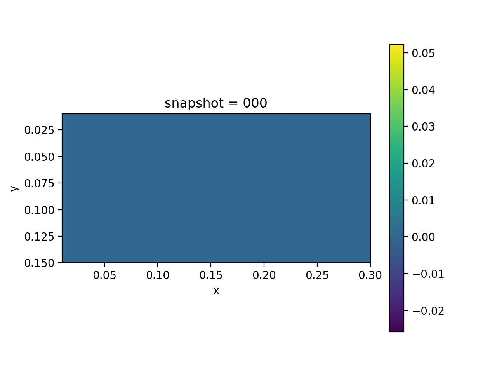
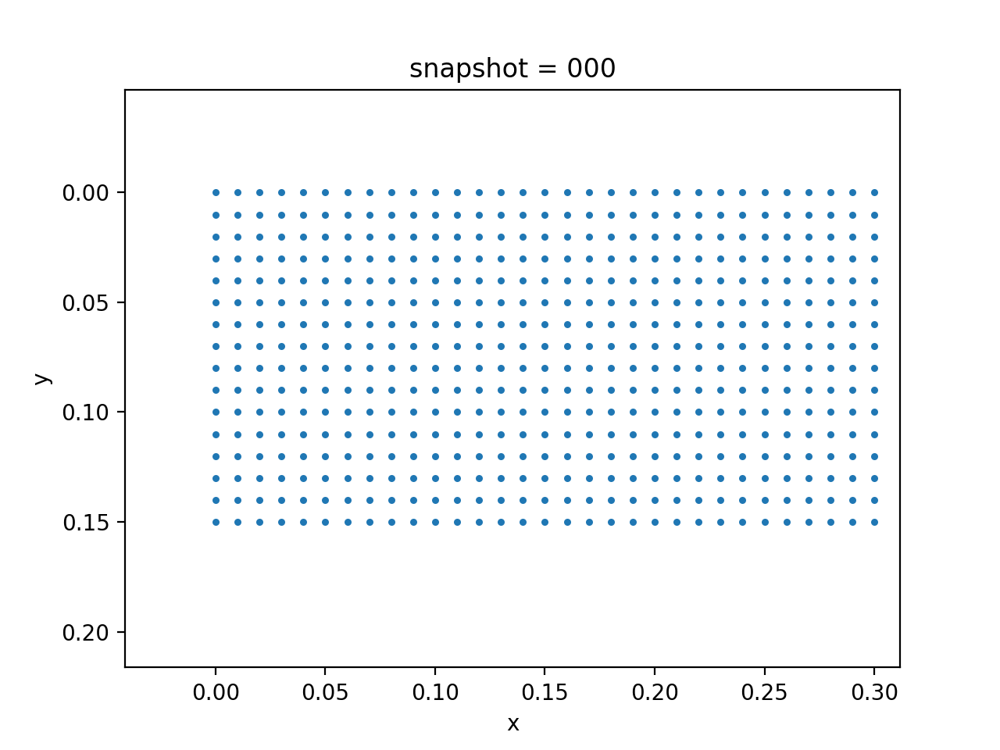
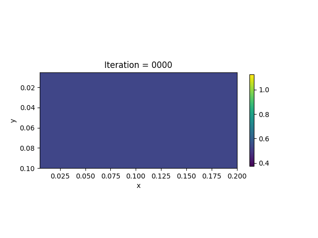

Inverse Modeling for Space Varying Viscoelasticity
Problem Description
In this example, we consider the Maxwell viscoelasticity model. The governing equations are
- Momentum Balance:
- Constitutive Relation (Plane Strain Viscoelasticity):
- Boundary Conditions:

We assume that the Lamé constants $\lambda$ and $\mu$ are given. The viscosity $\eta$ is spatial varying. We want to estimate $\eta$ based on the measurement of surface horizontal displacements. The true model consists of two layers of different vicosity.
| True Viscosity Distribution | Von Mises Stress | Displacement |
|---|---|---|
|  |  |  |
Forward simulation
We implement the forward simulation using finite element analysis discretization and $\alpha$-scheme, an implicit time stepping scheme that offers good stability and accuracy.
Inversion Method
We formulate the loss function as the discrepancy between observations and predictions
Unlike the linear elasticity case, in the viscoelasticity case, the stress is history-dependent. Therefore, when we calculate the gradients $\frac{\partial\mathcal{J}}{\partial \eta}$, the state variables are both $\mathbf{u}$ and $\bm{\sigma}$. Additionally, in each time step, since we have used an implicit scheme, we need to solve an equation
The state adjoint method requires us to compute the gradients of
with respect to $\bm{\sigma}^n$, $\eta$ and $\mathbf{u}^{n}$.
Surprisingly, the seemingly complex formula (1) admits a simple implementation using automatic differentiation (of course a special technique called physics constrained learning is needed). Once the gradients $\frac{\partial\mathcal{J}}{\partial \eta}$ is computed, the inversion problem can be solved using gradient-based optimization techniques (e.g., LBFGS).

Numerical Example
We present the numerical example here. The true model and inverted model are shown as follows. We assume that the viscosity values are the same horizontally.
| True model | Inverted result |
|---|---|
We also show the inversion results in each iteration:

Codes
The highlights of the implementation are
The $\alpha$-scheme for time stepping. A stable scheme is important for inversion since we need to try out different parameters, which may crash the simulation if the scheme is sensitive to physical parameters. Therefore, we chose the $\alpha$ scheme, which is an implicit scheme that offers satisfactory stability.
while_loop.while_loopmechanism allows us to create only one computational graph for all the iterations. This is essential for simulations that span large time horizons. Fortunately, TensorFlow offers this functionality.Custom sparse solver. We have used custom sparse solvers in
ADCME, which uses EigenSparseLUas the backend. The sparse solver is the key for efficient implementation of physics constrained learning; otherwise, direct implementation in TensorFlow will convert the sparse matrix to dense and then invoke BLAS libraries.
using Revise
using PoreFlow
using PyCall
using LinearAlgebra
using PyPlot
using SparseArrays
using MAT
using ADCMEKit
np = pyimport("numpy")
stepsize = 1
if length(ARGS)==1
global stepsize = parse(Int64, ARGS[1])
end
@info stepsize
mode = "training"
## alpha-scheme
β = 1/4; γ = 1/2
a = b = 0.1
n = 15
m = 2n
h = 0.01
NT = 100
Δt = 2.0/NT
ηmax = 1
ηmin = 0.5
obs_idx = collect(1:stepsize:m+1)
bdedge = bcedge("right", m, n, h)
bdnode = bcnode("lower", m, n, h)
# λ = Variable(1.0)
# μ = Variable(1.0)
# invη = Variable(1.0)
function eta_model(idx)
if idx == 1
out = ηmin * ones(n)
out[1:div(n,3)] .= ηmax
out
elseif idx==2
out = ηmin * ones(4, m, n)
out[:, :, 1:div(n,3)] .= ηmax
out[:, :, 2div(n,3):end] .= ηmax
out[:]
end
end
function visualize_inv_eta(X, k)
x = LinRange(0.5h,m*h, m)
y = LinRange(0.5h,n*h, n)
V = zeros(m, n)
for i = 1:m
for j = 1:n
elem = (j-1)*m + i
V[i, j] = mean(X[4(elem-1)+1:4elem])
end
end
close("all")
pcolormesh(x, y, V'/50.0, vmin=ηmin-(ηmax-ηmin)/4, vmax=ηmax+(ηmax-ηmin)/4)
colorbar(shrink=0.5)
xlabel("x")
ylabel("y")
# title("Iteration = $k")
axis("scaled")
gca().invert_yaxis()
if k == "true"
title("True Model")
savefig("true.png")
return
end
k_ = string(k)
k_ = reduce(*, "0" for i = 1:3-length(k_))*k_
title("Iteration = $k_")
savefig("iter$k_.png")
end
λ = constant(2.0)
μ = constant(0.2)
if mode=="data"
global invη_var = constant(eta_model(1))
invη = reshape(repeat(invη_var, 1, 4m), (-1,))
global invη *= 50.0
else
global invη_var = Variable((ηmin + ηmax)/2*ones(n))
invη_ = reshape(repeat(invη_var, 1, 4m), (-1,))
# invη_ = constant(eta_model(1))
global invη = 50.0*invη_
end
fn_G = invη->begin
G = tensor([1/Δt+2/3*μ*invη -μ/3*invη 0.0
-μ/3*invη 1/Δt+2/3*μ*invη 0.0
0.0 0.0 1/Δt+μ*invη])
invG = inv(G)
end
invG = map(fn_G, invη)
S = tensor([2μ/Δt+λ/Δt λ/Δt 0.0
λ/Δt 2μ/Δt+λ/Δt 0.0
0.0 0.0 μ/Δt])
H = invG*S
M = compute_fem_mass_matrix1(m, n, h)
Zero = spzeros((m+1)*(n+1), (m+1)*(n+1))
M = SparseTensor([M Zero;Zero M])
K = compute_fem_stiffness_matrix(H, m, n, h)
C = a*M + b*K # damping matrix
L = M + γ*Δt*C + β*Δt^2*K
L, Lbd = fem_impose_Dirichlet_boundary_condition_experimental(L, bdnode, m, n, h)
a = TensorArray(NT+1); a = write(a, 1, zeros(2(m+1)*(n+1))|>constant)
v = TensorArray(NT+1); v = write(v, 1, zeros(2(m+1)*(n+1))|>constant)
d = TensorArray(NT+1); d = write(d, 1, zeros(2(m+1)*(n+1))|>constant)
U = TensorArray(NT+1); U = write(U, 1, zeros(2(m+1)*(n+1))|>constant)
Sigma = TensorArray(NT+1); Sigma = write(Sigma, 1, zeros(4*m*n, 3)|>constant)
Varepsilon = TensorArray(NT+1); Varepsilon = write(Varepsilon, 1,zeros(4*m*n, 3)|>constant)
Forces = zeros(NT, 2(m+1)*(n+1))
for i = 1:NT
T = eval_f_on_boundary_edge((x,y)->0.1, bdedge, m, n, h)
# if i>=NT÷2
# T *= 0.0
# end
T = [-T T]
# T = [T T]
rhs = compute_fem_traction_term(T, bdedge, m, n, h)
# if i*Δt>0.5
# rhs = zero(rhs)
# end
Forces[i, :] = rhs
end
Forces = constant(Forces)
function condition(i, tas...)
i <= NT
end
function body(i, tas...)
a_, v_, d_, U_, Sigma_, Varepsilon_ = tas
a = read(a_, i)
v = read(v_, i)
d = read(d_, i)
U = read(U_, i)
Sigma = read(Sigma_, i)
Varepsilon = read(Varepsilon_, i)
res = batch_matmul(invG/Δt, Sigma)
F = compute_strain_energy_term(res, m, n, h) - K * U
rhs = Forces[i] - F
td = d + Δt*v + Δt^2/2*(1-2β)*a
tv = v + (1-γ)*Δt*a
rhs = rhs - C*tv - K*td
rhs = scatter_update(rhs, constant([bdnode; bdnode.+(m+1)*(n+1)]), constant(zeros(2*length(bdnode))))
## alpha-scheme
a = L\rhs # bottleneck
d = td + β*Δt^2*a
v = tv + γ*Δt*a
U_new = d
Varepsilon_new = eval_strain_on_gauss_pts(U_new, m, n, h)
res2 = batch_matmul(invG * S, Varepsilon_new-Varepsilon)
Sigma_new = res + res2
i+1, write(a_, i+1, a), write(v_, i+1, v), write(d_, i+1, d), write(U_, i+1, U_new),
write(Sigma_, i+1, Sigma_new), write(Varepsilon_, i+1, Varepsilon_new)
end
i = constant(1, dtype=Int32)
_, _, _, _, u, sigma, varepsilon = while_loop(condition, body,
[i, a, v, d, U, Sigma, Varepsilon])
U = stack(u)
Sigma = stack(sigma)
Varepsilon = stack(varepsilon)
if mode!="data"
data = matread("viscoelasticity.mat")
global Uval,Sigmaval, Varepsilonval = data["U"], data["Sigma"], data["Varepsilon"]
U.set_shape((NT+1, size(U, 2)))
idx0 = 1:4m*n
Sigma = map(x->x[idx0,:], Sigma)
global loss = sum((U[:, obs_idx] - Uval[:, obs_idx])^2)
end
if !isdir(string(stepsize));mkdir(string(stepsize)); end
sess = Session(); init(sess)
cb = (v, i, l)->begin
println("[$i] loss = $l")
if i=="true" || mod(i,20)==0
inv_eta = v[1]
matwrite("$stepsize/eta$i.mat", Dict("eta"=>inv_eta))
end
end
if mode=="data"
Uval,Sigmaval, Varepsilonval = run(sess, [U, Sigma, Varepsilon])
matwrite("viscoelasticity.mat", Dict("U"=>Uval, "Sigma"=>Sigmaval, "Varepsilon"=>Varepsilonval))
# p = visualize_von_mises_stress(Sigmaval[1:5:end,:,:], m, n, h); saveanim(p, "space_s.gif")
# p = visualize_displacement(Uval[1:5:end,:], m, n, h); saveanim(p, "space_u.gif")
visualize_inv_eta(run(sess, invη), "true")
# cb([run(sess, invη)], "true", 0.0)
error("Stop!")
end
v_ = []
i_ = []
l_ = []
loss_ = BFGS!(sess, loss*1e10, vars=[invη], callback=cb, var_to_bounds=Dict(invη_var=>(0.1,2.0)))